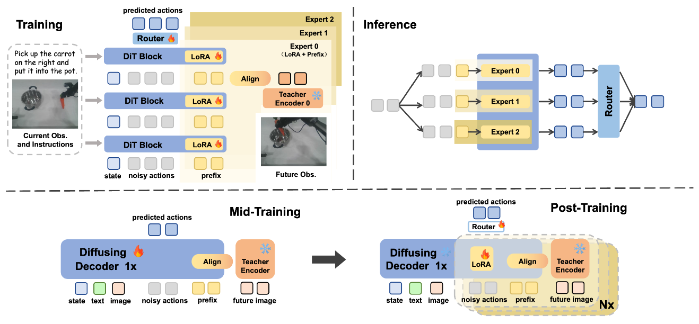
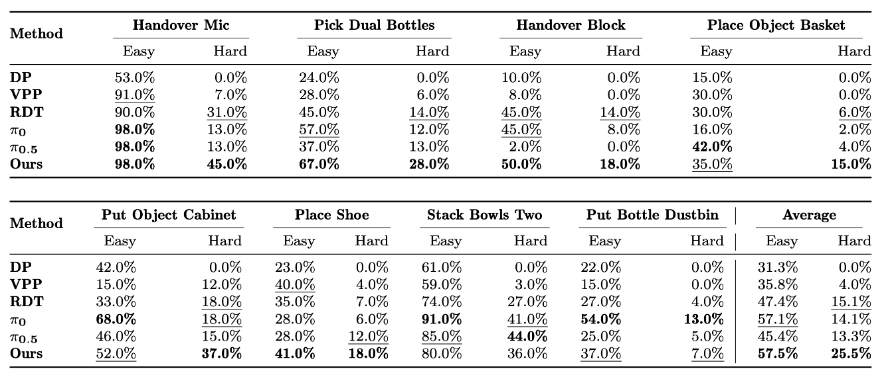
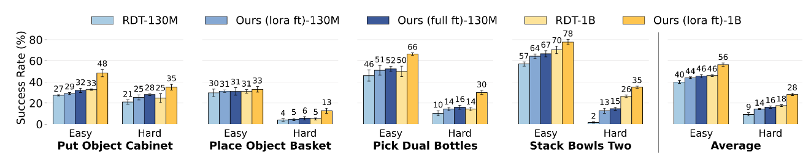
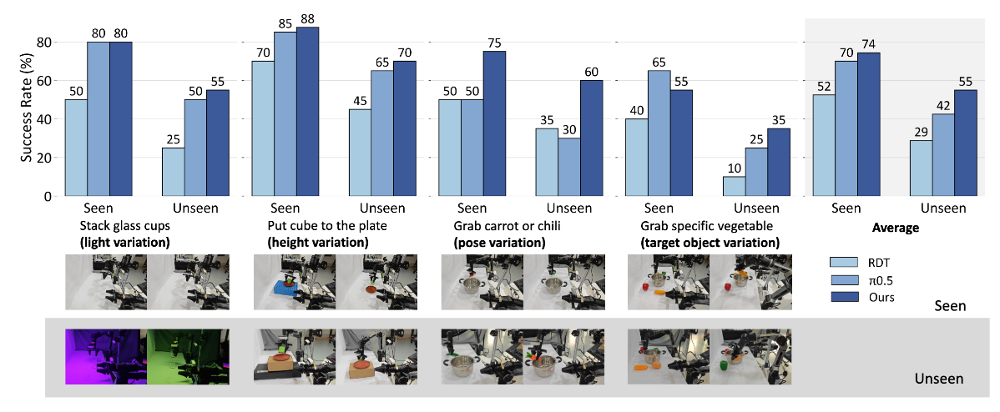
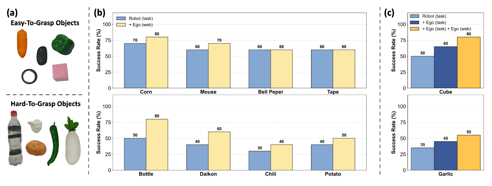
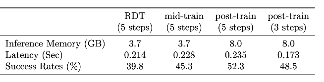

Training: The model progressively learns to align with the representation spaces of multiple visual foundation models simultaneously.
Two-Stage Training Strategy: 1. Mid-Training fully fine-tunes the model to align with a single visual encoder (Theia) 2. Post-Training introduces parallel experts with multiple prefixes and LoRA modules (MiPA) aligning with different visual teachers and aggregating their outputs via a router to achieve parameter-efficient scaling of model capacity.
Inference: Parallel inference is implemented during the inference stage.

FRAPPE outperforms SOTA models on average across 8 tasks under Easy and Hard settings on the RoboTwin simulation benchmark.

FRAPPE demonstrates strong performance even on small-scale models. A 130M RDT backbone achieves success rates comparable to those of RDT-1B with naive fine-tuning.


The implicit world modeling training process of FRAPPE can benefit from human video demonstration data without action labels, including both large-scale internet video data (Ego (Web)) and small-scale task-related video demonstration data (Ego (Task)).

FRAPPE enables efficient inference, maintaining competitive inference latency and GPU memory usage.
@article{zhao2025vla2,
title={VLA^2: Empowering Vision-Language-Action Models with an Agentic Framework for Unseen Concept Manipulation},
author={Han Zhao and Jiaxuan Zhang and Wenxuan Song and Pengxiang Ding and Donglin Wang},
journal = {arXiv preprint arXiv:2510.14902},
year={2025},
}